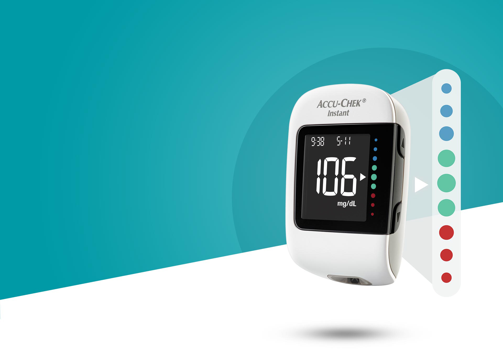
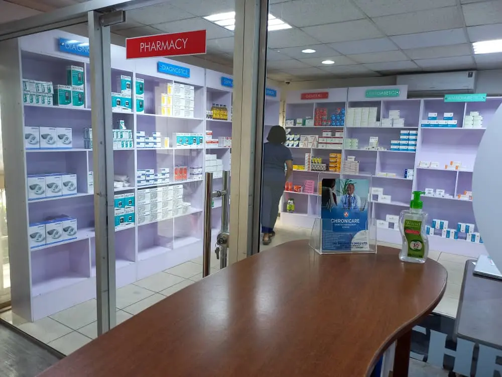

Explore all services
All services at the palm of your hand, right there within a single ecosystem.
Type 1 Diabetes Mellitus is an autoimmune disease caused when your immune system attacks the cells (Beta cells) in your pancreas that make insulin. Persons with Type 1 diabetes need to take insulin to replace what the body can no longer make. Although, it usually appears during childhood or adolescents, it can develop in adults.
Type 2 Diabetes Mellitus is the type usually found in adults. Family history, weight gain, lack of physical activity and stress can increase your risk of developing Type 2 diabetes. Here, insulin is produced by the pancreas but it is not adequate or your body does not use it well. The cells in your body become “resistant” , making your pancreas work harder to keep blood sugar levels normal. Although it can be managed through healthier eating, exercise and weight loss, eventually most people who have diabetes will need medication to bring their glucose down to their target level. There is no permanent cure but it can be managed effectively.
At Chronicare, we personalize our engagement with every patient. In the same vein, we understand that every patient would have distinct physiology, varying comorbidities, physical limitations, among others. We consult and tailor each patient’s fitness plan to these unique requirements. For us a fitness regimen is part of your prescription!
An integral part of managing a chronic illness is healthy diet. We offer nutrition consultation and develop an individualized meal plan that is sync with the treatment and fitness plan of the patient. This forms the complete the “Triad of Care” we offer our patients.
Our meal plans are as practical as possible and are developed around the palates and food that the patient is familiar with.
So, whatever your treatment plan, blood glucose level control, weight management, control of heart disease risk factors such as high BP and high blood cholesterol, we will develop a nutrition plan for you.
The Chronicare pharmacy offers a wide range of long-term care medications that form part our patient patients’ treatment plan. Whether you are refilling your prescription, buying testing devices and their consumables, wearables, and feet protection; looking to buy nutritional products or physio gears, the pharmacy gives you the assurance of authenticity, proper storage, and availability.
We have direct distribution relationship of world renown brands such as Accu-Chek, and Glucerna through the distribution partnership of our parent company with these manufacturers.
Finally, we offer “New Medication Service” to help onboard and guide patients who have been newly diagnosed or placed on a new medication. This service ensures that patients understand how the medication works, set reminders on usage, helps with adherence, and serve as helpline when there are feedback from medication use.
This includes effective exercise programs recommended by the physiotherapists. They usually range from mild joint movements and then progress to active exercises and stretches depending on the individual’s age, strength, balance and flexibility.
Diabetes can harm your eyes. It can damage the small blood vessels in the retina which is the back part of the eye. This is called diabetic retinopathy. Diabetes also increases your risk of having glaucoma, cataracts and other eye problems that could lead to vision loss. If you have diabetes, you need to work with your doctor and undergo regular eye examinations to ensure proper eye care.
Poor blood sugar control can lead to diabetes retinopathy. This is a complication caused by high blood sugar levels that can damage the back of the eyes. It can lead to blindness if left undiagnosed or untreated. It is therefore important that people living with diabetes carry out a mandatory annual eye screening.
One of the risk factors of high blood sugar levels is diabetes neuropathy. The condition most often affects the legs and feet due to nerve damage caused by high blood glucose. For some people, symptoms are mild or numbness of the feet. For others, symptoms can be painful, debilitating and even fatal. This is due to the damage to the nerves.
Proper foot monitoring can reduce your chances of developing foot conditions that may result in serious complications. We offer annual foot evaluation and teach patients how to carry out daily self-examination.
At the heart of our practice is self-management of diabetes. Hence, we have set out to empower our patients to live their best lives through the necessary care and information required to manage their condition.
Our certified Diabetes Nurse Educators (DNEs) offer a 5-part module on the various aspects of diabetes management ranging from pathophysiology of diabetes to prevention and management complications.

Home care is usually received by patients who are chronically ill, elderly or have lost the ability to walk. It includes wound care, serious injury care or palliative care.